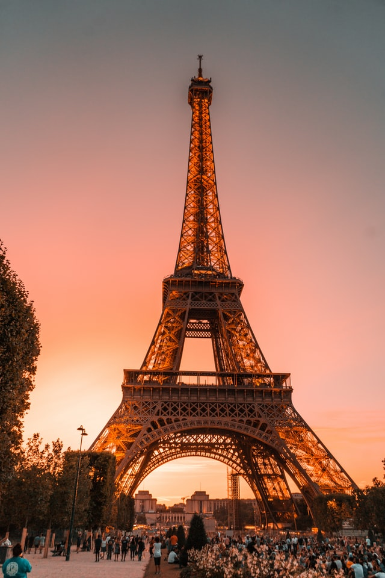
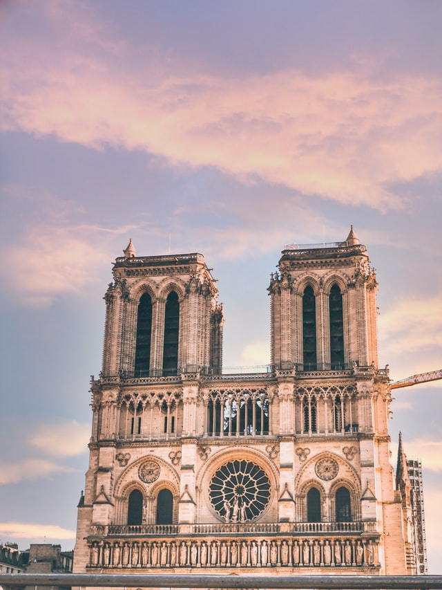
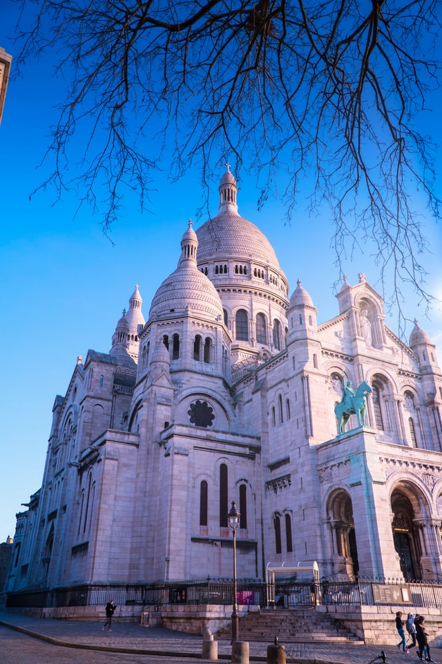
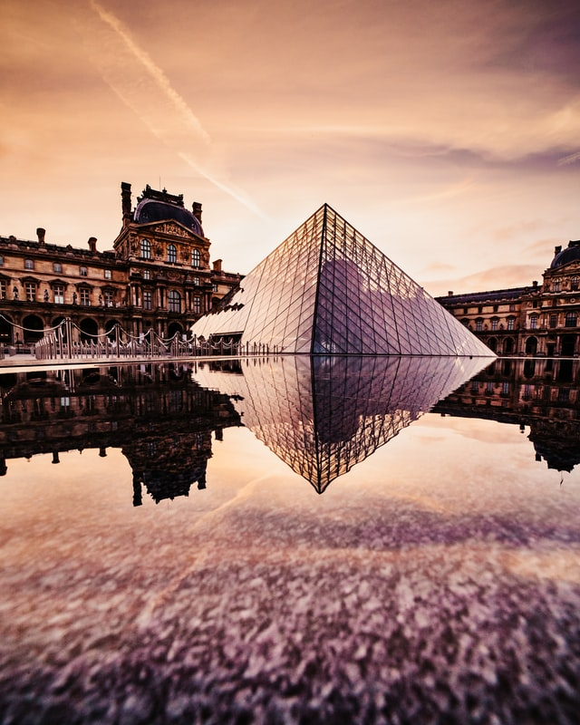
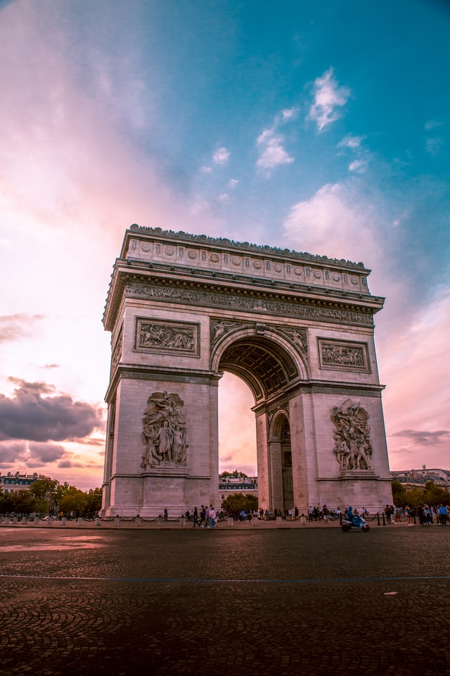

Eiffel-torony
Az Eiffel-torony Párizs egyik jelképe. Nevét a tervezőcég tulajdonosáról, Gustave Eiffel mérnökről kapta. Az 1889. évi világkiállításra készült, az eredeti tervek szerint a kiállítás után lebontották volna. A torony összmagassága 324 m, ebből maga a torony 300 m, rászerelve 24 m-re magasodik egy tévé-adóantenna. Első emelete 58, második emelete 116, a harmadik 276 méter magasan van. Négyzetalapú, 1,6 ha alapterületű, 10 100 tonna tömegű, 12 000 acéldarabból, szegecseléssel állították össze, átmeneti jelleggel. Évente kb. 10 tonna festék kell felülete karbantartásához. A New York-i Chrysler Building (319 m) 1930-as felépítéséig a legmagasabb építmény volt a világon.
Az Eiffel-torony sok megpróbáltatáson ment keresztül, de még ma is a világ egyik leghíresebb épületeként ismerjük. A híres torony 2007-ben A világ hét új csodája jelöltjeként is indult, bár végül nem került be közéjük.
Notre-Dame-székesegyház
A Notre-Dame Párizs legismertebb gótikus stílusú temploma, a Párizsi főegyházmegye főszékesegyháza. Monumentális méreteivel és díszítettségével különleges hatást gyakorol a szemlélőkre. A Notre Dame francia kifejezés, jelentése: „Mi Asszonyunk”. A katedrális Párizs szívében, a Szajna folyó Île de la Cité nevű apró szigetén épült.
A székesegyház hossza 128, szélessége 48, az ikertornyok magassága 69, a főhajó belmagassága 32,5 méter. A hosszháza öt-, a keresztháza pedig egyhajós. A fő- és a kereszthajó képzeletbeli metszéspontján áll a huszártorony. Az ikertornyok közötti rózsaablak átmérője közel 10 méter. A tetőzet faszerkezetének elkészítéséhez az építők mintegy 1300 tölgyfát használtak fel.
Sacré Cœur-bazilika
A Sacré Cœur-bazilika, vagyis a Szent Szív-bazilika egy párizsi római katolikus templom. A román és bizánci hatásokat magán viselő bazilika a város legmagasabb pontján (129 méter), a Montmartre-on áll.
A főbejárat két oldalán Jeanne d’Arc és Szent Lajos bronzszobra áll, amelyet Hippolyte Lefèbvre készített.[5] Az áldást osztó Jézus alakja egy falmélyedésben kapott helyet.
- Nagy Krisztus-mozaik - a szentély feletti boltívet Luc-Oliver Merson munkája, a Nagy Krisztus-mozaik borítja, amely 1900 és 1922 között készült. A mozaik Franciaország Szent Szív iránti elkötelezettségét jelképezi. A mozaik 475 négyzetméteres, a világ legnagyobb ilyen alkotása.
- Kripta - a boltíves kriptában őrzik az építkezés egyik támogatója, Alexandre Legentil szívét.
- Bronzajtók - az ajtókat az utolsó vacsorát és Jézus életének más eseményeit megörökítő domborművek díszítik.
- Harangtorony - az épület mellett álló harangtorony 84 méter magas, harangja 19 tonnát nyom. A harang a savoyai egyházkerület ajándékaként került Párizsba. A harangot 1885-ben öntötték Annecyban.
- Ólomüveg ablakok- 1903 és 1920 között készültek, de a második világháború alatt, 1944-ben, súlyosan megrongálódtak. Az ablakokat 1946-ban restaurálták.
Louvre
A Louvre Párizs központi részén, a Szajna jobb partján található nemzeti múzeum, a világ egyik legismertebb és 1793 óta a francia főváros legnagyobb kiállítóhelye. A Louvre architektúrája a reneszánsz kezdetei óta jóformán múzeuma a francia építészetnek és ha művészeti szempontból nem is egészen egységes, hatalmas arányai, gazdag és változatos architektúrája révén egyike az újabbkori építőművészet reprezentatív alkotásainak.
A Louvre épülete által határolt téren a 20. században üvegpiramist emeltek acélból, alumíniumból és üvegből, amely 21,65 m magas, oldalhosszúsága 35,4 m és 666 üveglapból áll. Hivatalosan ez utóbbi szám sehol sem jelenik meg. A Louvre múzeum tájékoztatása szerint a piramis összesen 673 üvegtáblából áll (603 rombusz alakú és 70 háromszög alakú, 2,1 cm vastagságú). I. M. Pei tervezőirodája úgy nyilatkozott, hogy a piramisban lévő üveglapok száma 698.
Diadalív
Az Arc de Triomphe (közismert magyar nevén a Diadalív) híres párizsi emlékmű, Franciaország fővárosának egyik legismertebb látnivalója, amely I. Napóleon császár és a mindenkori francia hadsereg dicsőségét hirdeti a Champs-Élysées végpontján, a Charles de Gaulle (korábban Étoile) téren.
A Diadalív meglehetősen egyszerű szerkezetű, egykapus diadalív, amely a Champs-Élysées-hez és a Grande Armée sugárúthoz (avenue de la Gramd Armée) illeszkedve szélesebbik oldalain kelet-nyugati irányban nyitott. A kisebbik oldalakon alacsonyabb kapuívek nyílnak észak-déli irányban, a Kléber és a Wagram sugárutak tengelyére illeszkedve.
Az Arc de Triomphe korának legnagyobb diadalíve volt. 50 méter magas, 47 méter széles, nagy ívei pedig 29 méter magasak. A hatalmas monstrum mintegy 100 ezer tonnát nyom, alapjai pedig 8 méter mélyen fekszenek a föld alatt. Az alapanyagául szolgáló követ Île-de-France régióban, Château-Landon közelében bányászták.